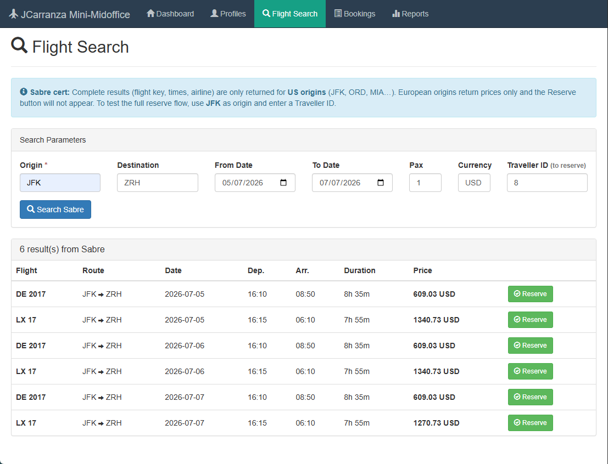
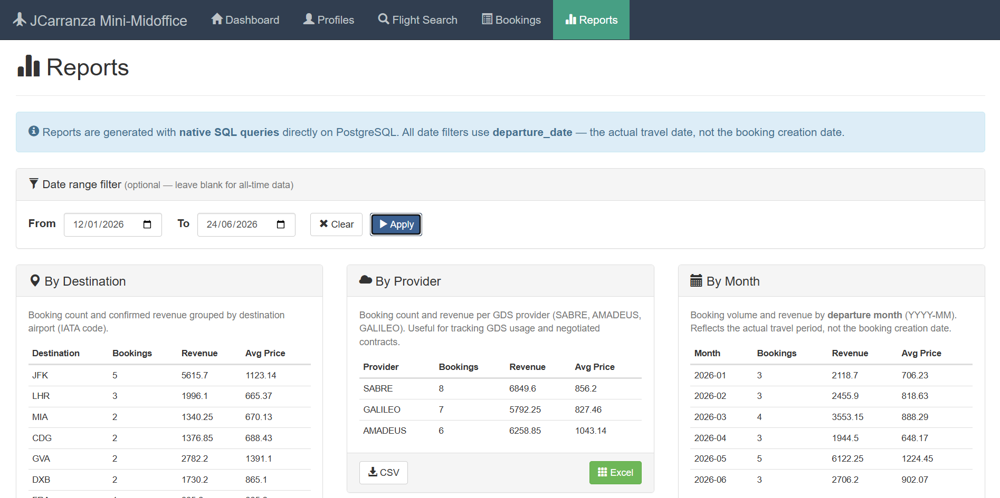

mini-midoffice
Spring 5→6 Major-Version-Migration, Schritt für Schritt angeleitet und verifiziert, mit echter Sabre-GDS-Integration.
Kontext
Ich wollte etwas ganz Konkretes testen: Wie gut kann ein KI-Agent wie Claude Code eine echte Major-Version-Migration (Spring 5 auf Spring 6) durchführen, wenn er dabei einer detaillierten Anleitung folgt, die ich selbst Schritt für Schritt definiert habe, und welche echten Erkenntnisse dabei entstehen. Claude Code hat die Anleitung Commit für Commit umgesetzt, immer grün. Meine Aufgabe war es, diese Schritte zu definieren, den Prozess zu steuern, jeden einzelnen Schritt zu verifizieren und die zehn konkreten Probleme ("Gotchas") herauszuarbeiten, die dabei unterwegs aufgetaucht sind, damit sie als wiederverwendbare Referenz dokumentiert sind. Nebenbei habe ich die Gelegenheit genutzt, das Projekt an die Zertifizierungs-Sandbox von Sabre GDS anzubinden: eigene Entwicklerzugangsdaten angelegt und die Endpunkte von Hand getestet, bevor sie integriert wurden.
Rundgang durch die Anwendung
Flugsuche
Live-Suche gegen die Sabre-Sandbox, mit echten Ergebnissen und einem Buchungs-Button für jedes Angebot.

Reports
Reports-Bildschirm mit Filtern nach Ziel, Anbieter und Datumsbereich, mit Export nach CSV und Excel.

Architektur

Die Service-Schicht spricht nie direkt mit Sabre: Sie ruft Port-Schnittstellen auf (GdsFlightSearchPort, GdsFlightCheckPort), die darunter von einem konkreten Adapter implementiert werden. Diese Zwischenschicht ist eine Anti-Corruption-Layer: Morgen könnte man Amadeus oder Galileo an denselben Port anschließen, ohne die Geschäftslogik anzufassen.
Stack
| Ebene | Technologie |
|---|---|
| Sprache | Java 17 |
| Framework | Spring 6.1.14 |
| Persistenz | Hibernate 6.4.4, PostgreSQL 16, HikariCP |
| Server | Tomcat 10.1 |
| Build | Maven Multi-Modul (WAR) |
| Frontend | Bootstrap 3, jQuery, Handlebars |
Was ich gemacht habe
- Die Schritt-für-Schritt-Migrationsanleitung definiert, die den gesamten Prozess gesteuert hat: was geändert wird, in welcher Reihenfolge, und was vor dem nächsten Schritt validiert werden muss.
- Claude Code bei der Ausführung dieser Anleitung angeleitet und jeden Migrations-Commit geprüft und validiert (Spring 5.3→6.1, Hibernate 5.6→6.4, Tomcat 9→10.1, javax.*→jakarta.*), dabei jeden Schritt auf korrektes Kompilieren und Verhalten geprüft, bevor es weiterging.
- Die zehn konkreten Probleme, die während des Prozesses auftauchten, herausgearbeitet und dokumentiert, als wiederverwendbare Referenz für künftige ähnliche Migrationen.
- Die Sabre-Endpunkte in der Zertifizierungs-Sandbox manuell getestet (Flugsuche, Preisprüfung, Buchung) und dabei entdeckt, dass die Suche nur für Abflugorte in den USA vollständige Daten liefert, eine Einschränkung der Testdaten, kein Fehler der Integration.
- Die Entwicklerzugangsdaten in der Sabre-Sandbox angelegt und Konfiguration sowie einzelne Code-Details angepasst, wo es nötig war.
Technische Herausforderung
Die Herausforderung hier war nicht das Schreiben von Code, sondern das gründliche Verifizieren dessen, was jemand anderes (in diesem Fall ein KI-Agent) geschrieben hat. Es ist einfach, sich darauf zu verlassen, dass "kompiliert grün" gleichbedeutend ist mit "ist in Ordnung", aber das reicht nicht aus. Ein konkretes Beispiel aus meinen eigenen Tests: Zu Beginn lieferte die Flugsuche von europäischen Abflugorten leere Ergebnisse, und der erste Verdacht war ein Bug in der Integration. Durch gründliche Recherche gegen die Sabre-API bestätigte sich das Gegenteil: eine Einschränkung des eigenen Zertifizierungs-Datensatzes, vollständige Daten gibt es nur für Abflugorte in den USA (JFK, ORD, MIA). Diese Art von Unterschied, zwischen "das ist kaputt" und "das ist eine Einschränkung der Testumgebung", entdeckt man nur durch echtes Testen, nicht durch Lesen des Codes. Solche losen Erkenntnisse in klare, wiederverwendbare Dokumentation zu verwandeln, war die eigentliche Arbeit.
Ergebnis & Learnings
Eine vollständige, Schritt für Schritt verifizierte Major-Version-Migration, mit zehn echten Problemen, dokumentiert als wiederverwendbare Referenz, und eine Sabre-GDS-Integration, die wirklich getestet wurde, nicht nur simuliert. Und, allgemeiner betrachtet, eine kleine Fallstudie darüber, wie man einen KI-Agenten bei einer echten Ingenieursaufgabe gut anleitet und validiert, statt dem Ergebnis blind zu vertrauen.